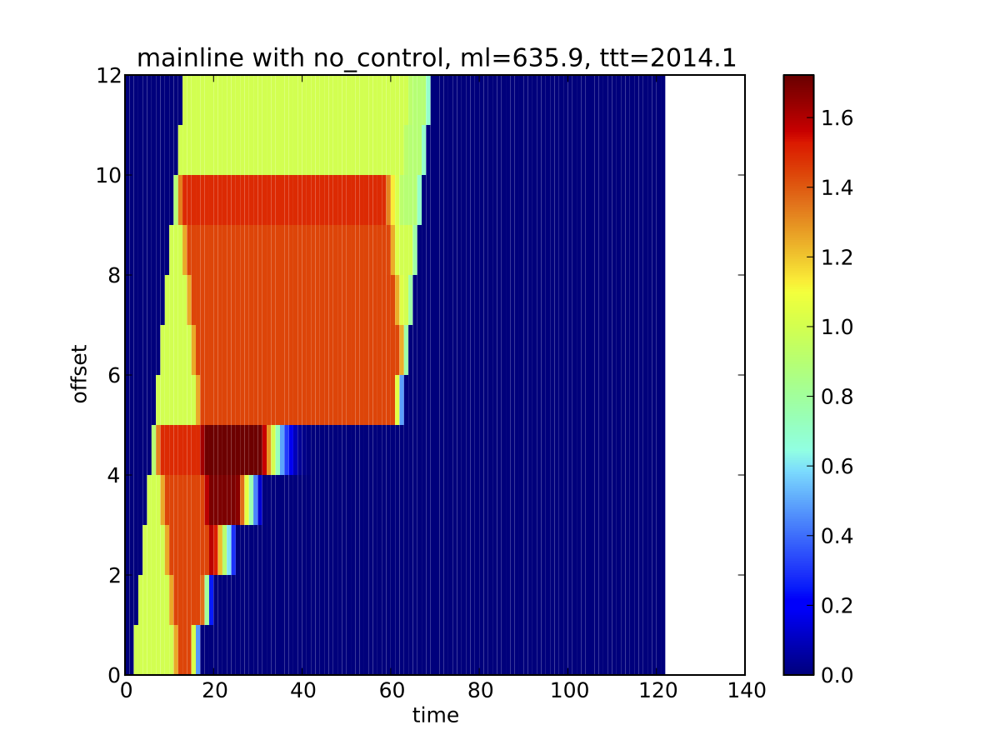
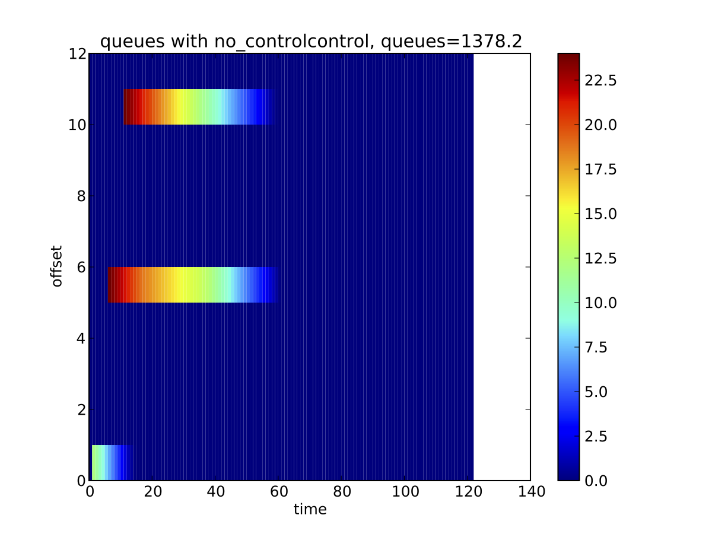
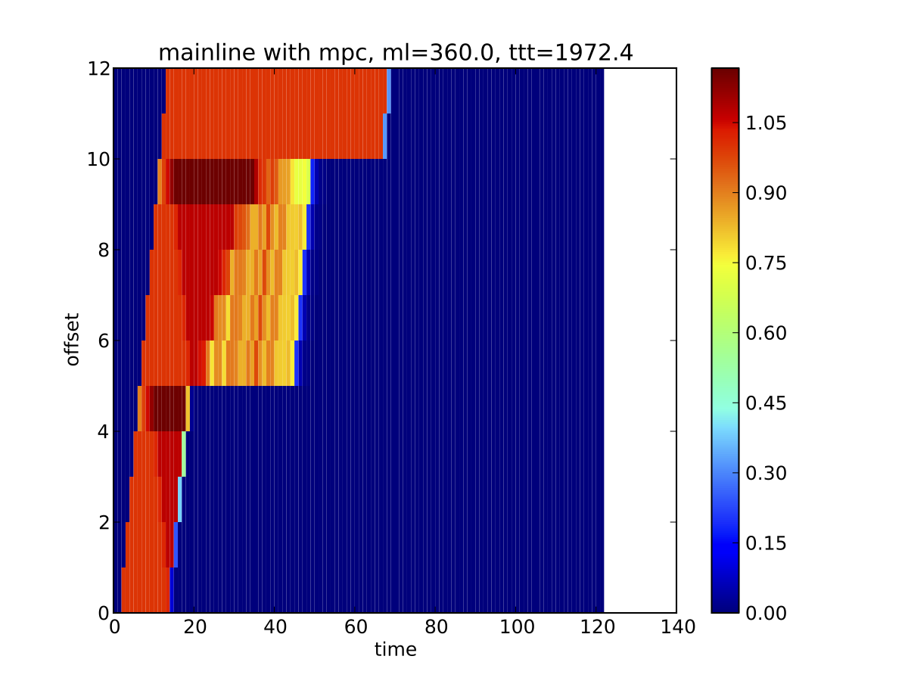
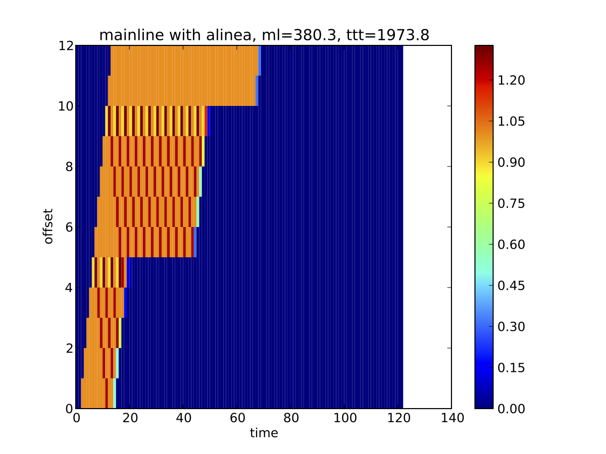
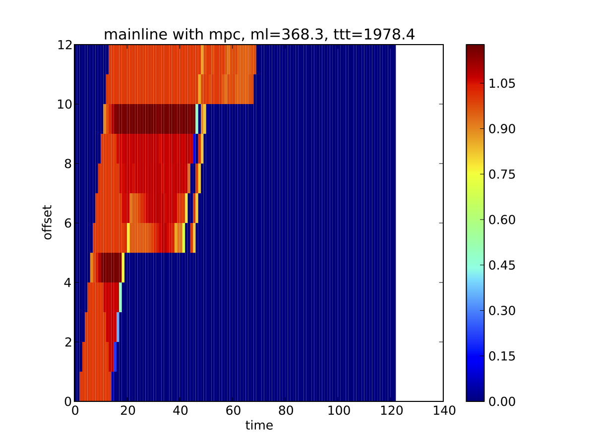
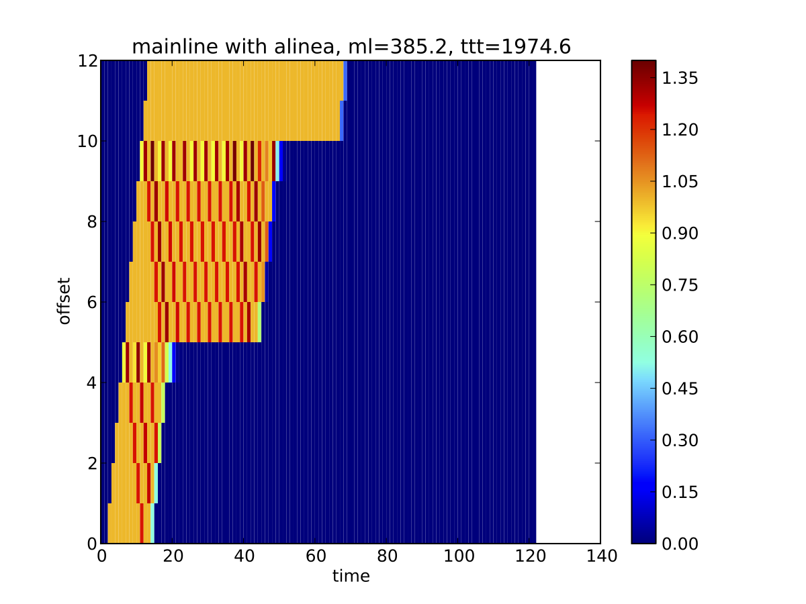
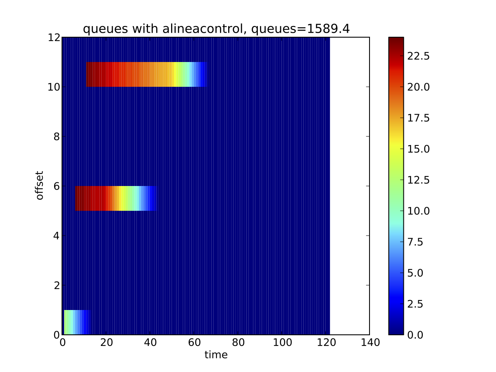
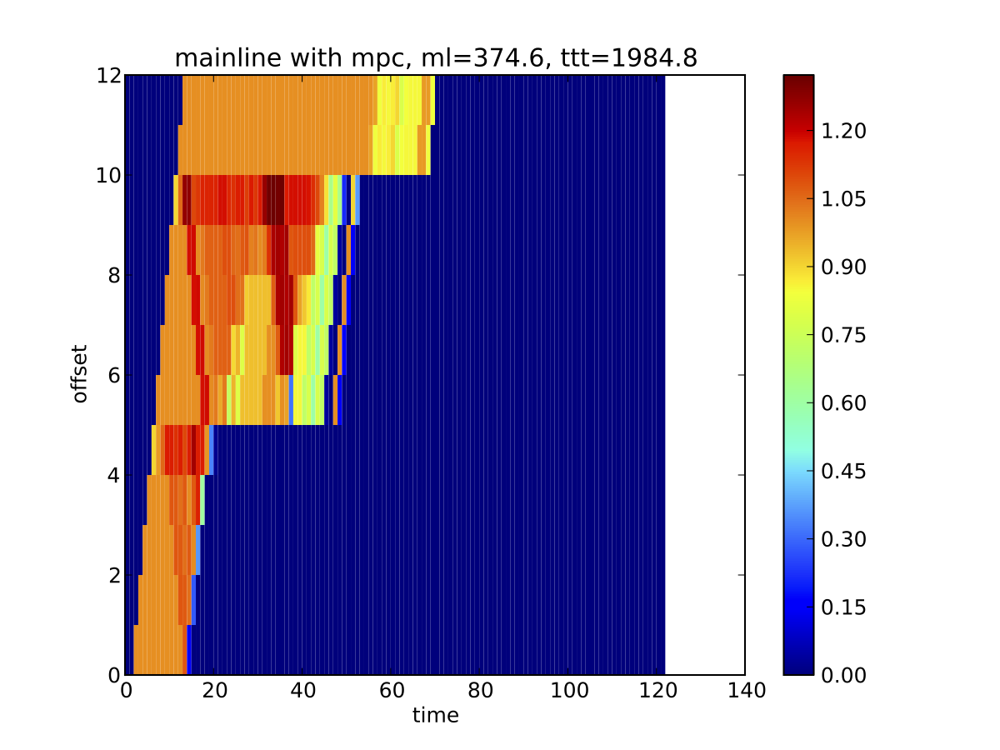
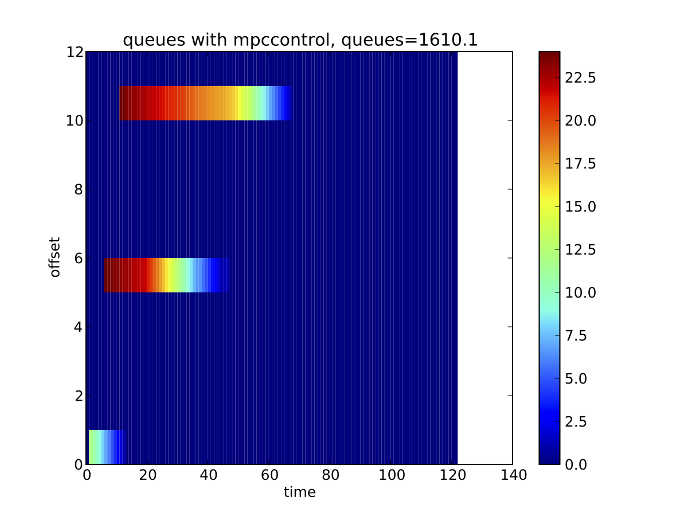
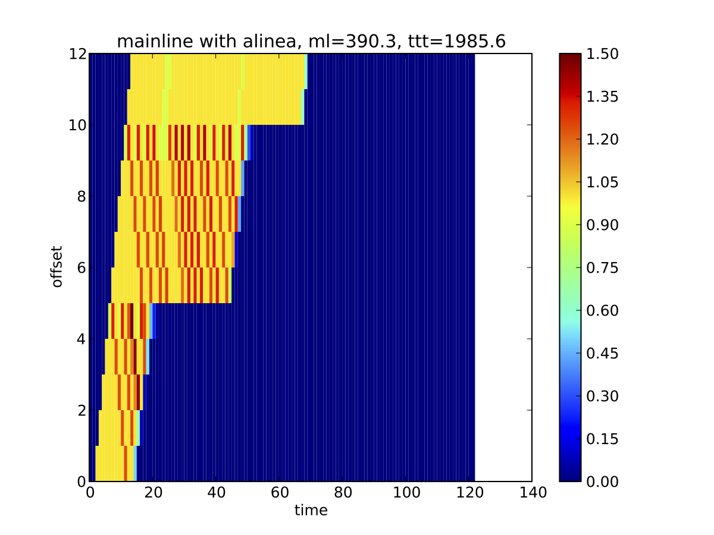

- Synthetic freeway network
- Fundamental diagrams have ~ 60 mph free flow, 60 mph congestion speed, 1 veh/ second capacity.
- 12 links (~ 6 miles)
- 120 timesteps (~ one hour)
- 3 onramps
- One demand “impulse” per onramp at different times
- Total travel time units in vehicle minutes.
- Density units in vehicles / mile.
- Queue units in vehicles.
- Beats was used as the “real world”, and was responsible for keeping track of real state, forward dynamics, and dispatching control
- Different control schemes were tried
- No control
- Adjoint
- At regular update periods, Beats passes estimated current densities, boundary fluxes, and split ratios to the adjoint controller to make policies
- Alinea
- Every timestep, Beats updates Alinea with estimated current densities and model parameters.
- Control schemes may be passed perfect information on model/initial conditions/ boundary conditions, or noisy estimates (artificial noise added by Beats).
Noise was modeled by taking the true state (as seen by Beats), and perturbing the state as passed to the control schemes (both Adjoint and Alinea). If noise was “x %”, then the value v’ as seen by a control scheme is: v’ = v * (1 + 2 * x / 100 * (rand(0,1) - .5)) where v is the true value.
- Initial condition noise
- changes initial densities and queue lengths
- affects both adjoint and alinea
- Model noise
- changes fundamental diagram properties and max ramp flux rates
- affects both adjoint and alinea
- Boundary condition noise
- changes the split ratios and onramp influxes for all time steps
- Only affects adjoint.
- Adjoint and Alinea show robustness to noise, even to extreme noise levels (20%)
- Slight degradation in performance for noise levels at 5%
- Adjoint and Alinea seemed to be roughly on par for this synthetic network, for all noise levels considered.
- Results with real data on a real network may prove to be more enlightening, but these preliminary results show both controllers to be rather robust to model/data noise.
 



 
 
